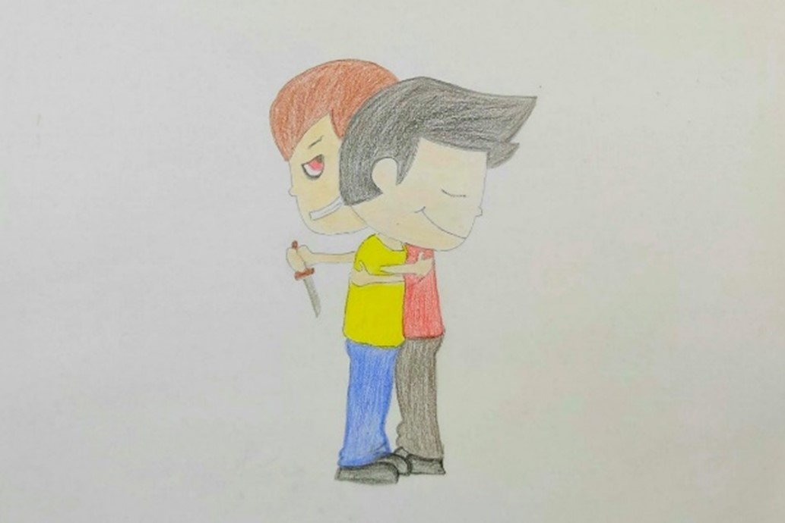

Guerre en Ukraine : les lourdes conséquences pour deux paysans et le rôle crucial des journalistes
Deux paysans ukrainiens de Tchassiv Yar et Kramatorsk ont été condamnés à des peines de 10 à 12 ans de prison pour avoir transmis des informations sensibles à la Russie pendant le conflit en cours. Ce verdict, rendu public le 5 mars 2024, souligne la sévérité de la trahison en temps de guerre et expose les dangers auxquels s'exposent ceux qui collaborent avec l'ennemi.
En plus des lourdes sanctions pénales, les deux hommes risquent de perdre la confiance et l'intégration sociale au sein de leur communauté. La trahison est un acte grave qui peut entraîner des conséquences dévastatrices sur la vie des individus et de leurs familles.
Parallèlement à ce cas, la guerre en Ukraine continue d’entraîner des conséquences humanitaires dévastatrices. Des milliers de civils ont été tués ou blessés, et des millions ont été contraints de fuir leurs foyers. La destruction des infrastructures, l'impact psychologique et social et le risque de crise alimentaire mondiale sont autant de défis majeurs auxquels le pays est confronté.
Dans les conflits armés, les enfants sont toujours les plus vulnérables. La guerre en Ukraine n'est pas une exception. Les effets dévastateurs du conflit se font sentir de manière disproportionnée sur les plus jeunes, avec des répercussions durables sur leur santé mentale, leur éducation et leur épanouissement.
Dans ce contexte tragique, les journalistes jouent un rôle crucial. Ils informent le monde sur les événements en cours, documentent les crimes de guerre et les violations des droits humains, et donnent une voix aux victimes. Cependant, leur travail est souvent périlleux.
Depuis le début de la guerre, plus de 50 journalistes ont été tués en Ukraine, selon Reporters sans frontières. Ils sont également exposés à la censure, à l'intimidation et aux traumatismes psychologiques.
La protection des journalistes est donc essentielle pour garantir le droit à l'information et la liberté d'expression. Les gouvernements et les organisations internationales doivent condamner les attaques contre les journalistes, mettre en place des mesures de protection et soutenir ceux qui ont été traumatisés par la couverture de la guerre.
En conclusion, la guerre en Ukraine met en lumière les dangers de la trahison et le rôle crucial des journalistes dans la défense de la vérité et de la liberté. Il est de notre devoir de soutenir ceux qui s'exposent au péril pour informer le monde et documenter les événements tragiques qui se déroulent en Ukraine.
4e C : Diva Zaghrini, Christa-Maria Chahine, Theresa Salibi , Gaëlle Sawaya